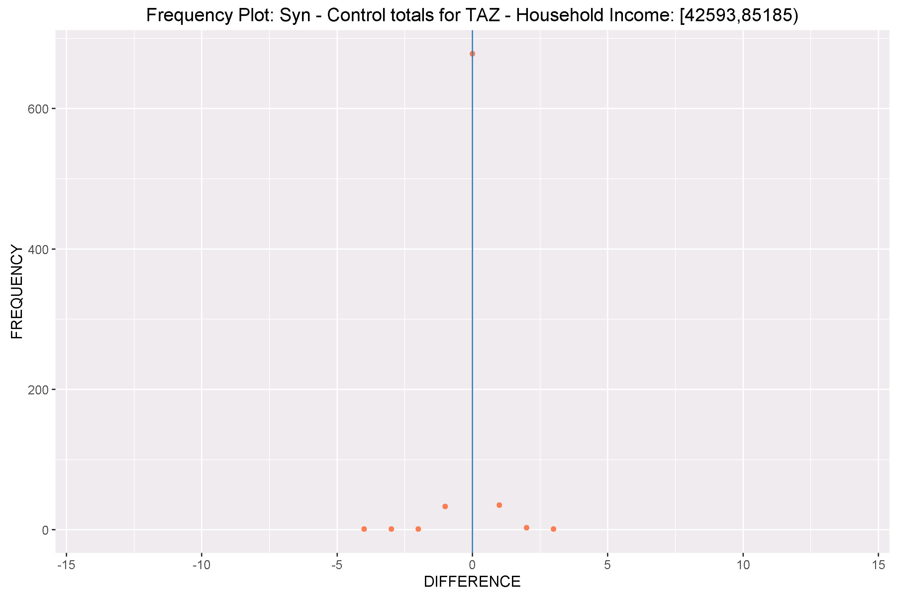

Validation of Results¶
One of the most critical steps in the population synthesis procedure is the validation of the synthetic population. Validation can give us clues about inconsistencies among controls, data processing errors or misspecification of settings. This section provides general guidelines on validation procedures.
PopulationSim reports the difference between the synthesized totals and the control totals for all the controls
at each geographic level. User can select these summaries using the output_tables: token as described in
the Configuring Settings File section. The Inputs & Outputs section lists all the summaries available to user.
Most population synthesizers will match each control very well at a regional level; therefore such summaries
are useful but not very insightful into the goodness-of-fit of the tool at lower level geographies. Users
can download a validation Jupyter Notebook to
generate advanced summary statistics and validation plots. This validation notebook takes summaries and
outputs from a PopulationSim run and generates plots and advanced summaries. The notebook is configured to run
for the CALM region example and includes notes on inputs and configuration settings. To download and run
the CALM region example refer to the Getting Started section.
Validation Summary Statistics¶
Statistics related to the convergence at a more disaggregate level are generated by the validation notebook. These statistics are being computed for the geography at which the controls are specified i.e. MAZ, TAZ or Meta as the case might be. The following three statistics are computed:
The average percentage difference between the control totals and the synthesized totals,
The standard deviation (STDEV) of the percentage difference – this measure describes how much dispersion from the average exists, and
The percentage root mean square error (RMSE) - an indicator of the proximity of synthesized and control totals.
The number of geographies for which the control is non-zero (N) are also reported.
Charts & Plots¶
The validation notebook also produces charts and plots which includes frequency distribution and expansion factor distribution plots.
Validation Charts¶
The validation chart is a visualization of the disaggregate summary statistics – mean percentage difference, STDEV and RMSE of percentage differences. A form of dot and whisker plot is generated for each control where the dots are the mean percentage differences and horizontal bars are twice the STDEV or RMSE centered around zero. An example validation chart is below:
Frequency Distribution Plots¶
These are frequency distribution plots of differences between control and synthesized values across the geography at which the controls were specified. An example frequency distribution plot is below:

Expansion Factor Distributions¶
While a synthetic population may match the controls well, it is important to know how uniform the household weights are, and how different they are from the initial weights. The closer the final weights are to the initial PUMS weight, the higher the probability of matching the distribution of uncontrolled variables. An expansion factor is computed for each record in the seed data as total final weight/initial weight. A distribution plot of these expansion factors is created for each Seed geography. A good synthetic population would have most of these expansion factors as close to one as possible. An example expansion factor distribution is shown below: